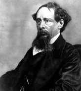

Sadece birkaç romancı, Charles Dickens’ın (1812-1870) üretkenliği ve şöhretine denk olmaya yakındır. Eserlerinin devasa hacmi, çoğu kalın ciltli kitaplar olan on beş büyük roman ve sayısız gazete yazısı ve makalenin daha fazlasından oluşmaktadır. İftiracılar Dickens’ın eserlerini cahilce bulup aşağılamasına rağmen, o böylesi eleştirileri görmezden geldi ve toplumsal bilinçte bir hikâye anlatıcısı olarak kendi çizgisini yakaladı. Karşılığında, bir hayran kitlesi Dickens’ı Viktoria döneminin en sevilen şahsiyetlerinden biri olarak destekledi.

Dickens, babasının kamu hizmeti sırasında memur olarak çalıştığı Chatham ve Londra’da çocukluğunu geçirdi. Ailesinin çok para harcaması onları borçlu hapishanesine düşürünce, on iki yaşındaki Dickens okulu terk etmeye ve ayakkabı boyama fabrikasında işe girmeye mecbur kaldı. Bu dönem, yazılarında da açıkça görüldüğü üzere, ona fakirler için yaşamı boyunca empati kazandıran bir tecrübe oldu. Dickens fabrikadan ayrılabildiği zaman, kısa bir eğitim görerek hukuk memurluğu ve sonrasında da gazetecilik yaptı.
Dickens’ın ilk yayımlanan romanı Pickwick Notları (1836) şöhretini sağlamlaştırdı. Eserlerinin birçoğu gibi, bu eseri de ona büyük bir finansal rahatlama veren aylık bir dergide dizi olarak yayınlandı. Dickens sonraki beş yılda, sokaklarda yaşayan genç bir yetimin hikâyesi olan Oliver Twist (1837-1839) adlı klasik romanı da dâhil seri hâlde dört roman daha ortaya koyarak, müthiş bir süratle yazdı.
Ahlâkî bir anlatı olan Bir Noel Hikâyesi’nden (1843), “en sevdiği çocuğu” olan kısmen otobiyografik romanı David Copperfield’e (1849-1850) uzanan her yeni eseri, halkın Dickens’a sevgisini artırdı. Bu eserlerin tümü yoksulluğa ve diğer sosyal sorunlara eğilmesine rağmen, bu alâka sonraki romanlarında, kısmen İngiliz yasal sisteminin yetersizliği hakkındaki Kasvetli Ev’de (1852-1853) ve sanayileşmenin karanlık tarafı hakkındaki Zor Yıllar’da giderek ciddileşti. Dickens’ın kariyeri, tarihî romanı İki Şehrin Hikâyesi (1859) ve trajik bir roman olan Büyük Umutlar (1860-1861) ile sonlandı.
Dickens’ın eserlerinin kalitesi, ustalıklı kurgulardan yüzeysel duygusal hikâyelere önemli ölçüde değişkenlik göstermektedir. Dickens’ın romanlarını seri hâlde yayınlaması ve çoğunlukla kelime başı ödeme alması gerçeği, bu çelişkinin nedenini oluşturur. Bu durum niceliğin niteliğe baskın çıkması demek olsa bile, Dickens daima bilinçli bir şekilde okuyucularını memnun etmek amacıyla çalıştı. Eserleri, bugün hâlâ okuyucuları memnun etmeye devam etmektedir.
EK BİLGİLER:
1. Dickens’ın üretkenliği sadece yazıları ile sınırlı değildi; aynı zamanda karısı Catherine Hogarth’tan da on çocuk sahibiydi.